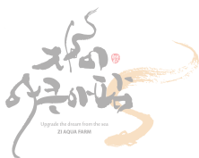

자이아쿠아팜
대표 보양음식중 하나인 장어!
신선하고 힘이 넘치는 장어를 준비하였습니다.
자이아쿠아팜 장어는 오랜 노하우로
품질높은 손질을 해드립니다. 여러분이 많은 관심 부탁드립니다.
국내 최대 규모의 생산 시설
자이아쿠아팜은 국내 최대 규모의 현대시설을 갖춘 양식장입니다. 35년 전통의 장어양식 명가로, 특허받은 양식 기술로 학생제를 사용하지 않고 전기로 유해균을 없애는 방식으로 관리한 친환경민물 장어를 양식,생산합니다.
특허받은 장어 양식 기술
특허받은 양식 기술로 항생제를 사용하지 않고 전기로 유해균을 없애는 방식으로 관리한 친환경 민물장어를 양식 중입니다.
1일 2번의 수질정화로 최상의 수질을 유지하여 폐사량이 0.1%도 채 안될 정도로 우수한 양식환경에서 양식하여
건강한 민물장어를 생산합니다.
순환여과식 기술
지수식과 순환여과식 장점이 결합된 퓨전식 시스템입니다.
지수식 양어장 개조에 유리,170수조 시스템 구축 기술보유,국내·해외 구축 시장 약 1,000곳 이상 고객이 있습니다.